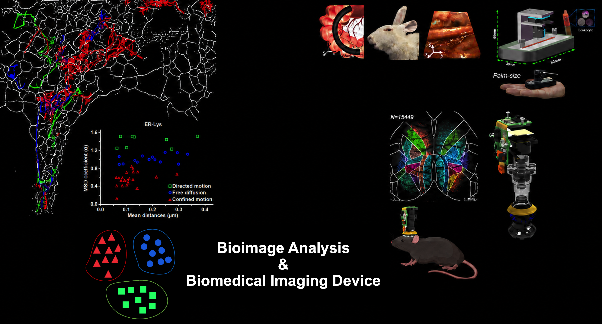

研究
显微成像：系统与算法
我们致力于发展跨模态的先进生物医学成像技术，研究涵盖新型成像物理、自底向上的系统设计，以及面向具体成像场景的硬件与计算算法协同设计。我们希望在光子或信号预算、采集速度、成像深度和系统复杂度等实际约束下，优化空间、时间与信息分辨能力。
代表性技术：
(1) Sparse deconvolution 是一种物理信息驱动的重建框架，利用稀疏性与结构连续性突破显微成像系统的既有性能限制，提升分辨率、对比度和信噪比，尤其适用于低信噪比条件。相关应用包括Sparse-SIM和Sparse SD-SIM。
(2) SACD 是一种基于涨落的超分辨框架，仅使用20帧图像即可将横向和轴向分辨率提高约三倍(2 mm × 1.4 mm视场约需10分钟)，且无需额外光学器件。Sparse-SACD还可实现快速四维活细胞超分辨成像。另见我们的无标记SACD工作[Light: Science & Applications, 2025]。
(3) RIED 是一种面向极端光子受限生物发光(BL)和电化学发光(ECL)的反应发光超分辨框架。通过解码内在发光涨落，RIED无需外部光激发或光化学调制即可实现高对比度二维和三维超分辨成像。BL-RIED支持连续超过两天的超分辨成像。

从成像物理与仪器研制，到计算重建和系统—算法协同设计。
机器学习：方法与应用
我们发展面向多维生物医学与自然信号重建、分析的机器学习方法：一方面利用显式的物理与结构先验设计可解释计算模型，另一方面利用数据驱动先验解决传统方法难以处理的问题。研究涵盖自监督学习、表征学习、贝叶斯学习和基础模型，应用包括降低显微成像对光子数、采集时间与硬件的需求，以及加速生物图像重建、表型分析与科学发现。
智能生物图像分析与生物医学装置
我们发展智能生物图像分析方法和生物医学成像仪器，以支持自动化、定量化和高通量生物学研究。研究涵盖图像分割、追踪、表型分析和表征学习，以及紧凑型、面向应用的成像装置与系统开发。
代表性技术：
(1) PANEL (逐像素误差位置分析)是一种在超分辨尺度上绘制重建误差的定量框架，可系统评估传统重建方法和基于深度学习的重建方法。
(2) 智能掌上型光流控血液分析仪 是一种基于紧凑成像平台的装置，用于自动测量白细胞浓度和快速血液学分析。
(3) 光场内窥探头 光场内窥探头以MIRD(多微型成像器件)为起点，通过高柔性、紧凑型探头实现单次曝光的高分辨率体成像。我们持续探索新的光学设计与计算成像策略，以进一步提升成像性能、探头柔性和实用性。另见[Optics and Lasers in Engineering, 2026]和[Optics Express, 2026]。
(4) 稀疏共聚焦显微成像与单颗粒追踪 用于揭示SARS-CoV-2病毒样颗粒如何借助丝状伪足，以“滑行”和“抓取”两种不同模式到达细胞进入位点，从而减少在细胞质膜上的随机搜索。另见[European Journal of Cell Biology, 2025]。

从定量生物图像分析到紧凑、面向应用的生物医学装置。